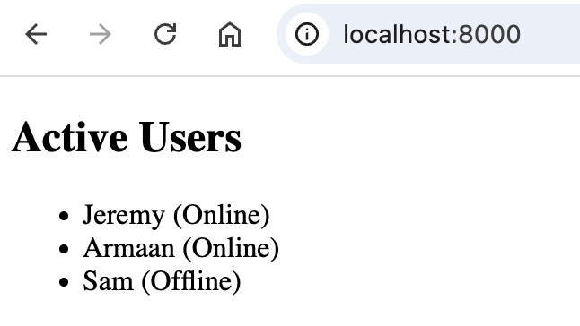

Using EJS Loops and Conditionals
Overview
EJS allows you to use JavaScript logic to display dynamic content. This section will cover common control structures that you may want to use when embedding JavaScript logic into HTML.
Conditionals
We use <% %> tags to embed JavaScript logic into HTML without outputting content.
EJS Tags
Using incorrect EJS tags will result in unexpected behaviour or errors. Please refer to this guide's EJS Tags section for details on the different EJS tags.
Basic if Statement
You can use a basic if statement to display content if a certain condition is met.
Example: Greet User if They Are Logged In
if-else Statement
if-else statements can be used to display different content when a condition is true or false.
Example: Changing Text Depending on the Weather
<% if (weather.isSunny) { %>
<p>It's a beautiful day!</p>
<% } else { %>
<p>Let's stay inside today.</p>
<% } %>
else-if Chain
A chain of else-if statements can be used to inject different HTML depending on the value of a variable.
Example: Display a Teacher's Comment Depending on Student Grade
<% if (student.grade > 90) { %>
<p>Great job!</p>
<% } else if (student.grade > 75) { %>
<p>Good Job!</p>
<% } else { %>
<p>Please come see me during office hours.</p>
<% } %>
Shorthand Conditional Statement
Shorthand conditional statements are convenient for simple logic inside of <%= %> tags.
Example: Completing a Sentence Using a Ternary Operator
Loops
Loops can be used to iterate over arrays or objects to dynamically inject repetitive HTML content.
for Loop
A simple for loop can be used to populate HTML with repetitive content.
Example: Create Headings For Numbered Items
forEach Loop
You can loop through arrays using a forEach loop.
Example: Greet Each User in an Array of Users
for...in Loop
To loop through key-value pairs of an object, we can use a for...in loop.
Example: Display Information About a User
<h2>User Info</h2>
<ul>
<% for (let key in user) { %>
<li><<%= key %>: <%= user[key] %></li>
<% } %>
</ul>
Practical Example: List Users and Their Status
<% let users = [
{ name: 'Jeremy', online: true },
{ name: 'Armaan', online: true },
{ name: 'Sam', online: false }
]; %>
<h2>Active Users</h2>
<ul>
<% users.forEach(user => { %>
<% if (user.online) { %>
<li><%= user.name %> (Online)</li>
<% } else { %>
<li><%= user.name %> (Offline)</li>
<% } %>
<% }); %>
</ul>
HTML Output

Conclusion
You're all set to use conditional statements and loops in your EJS templates! You can now use the techniques described in this section to dynamically display content.